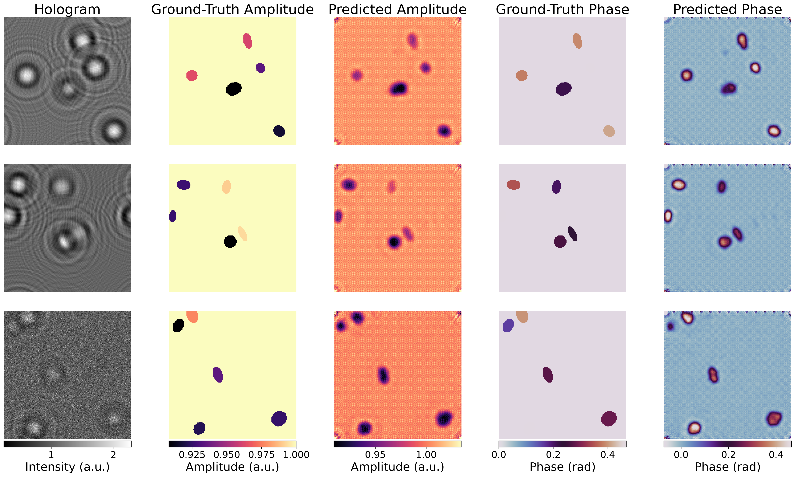
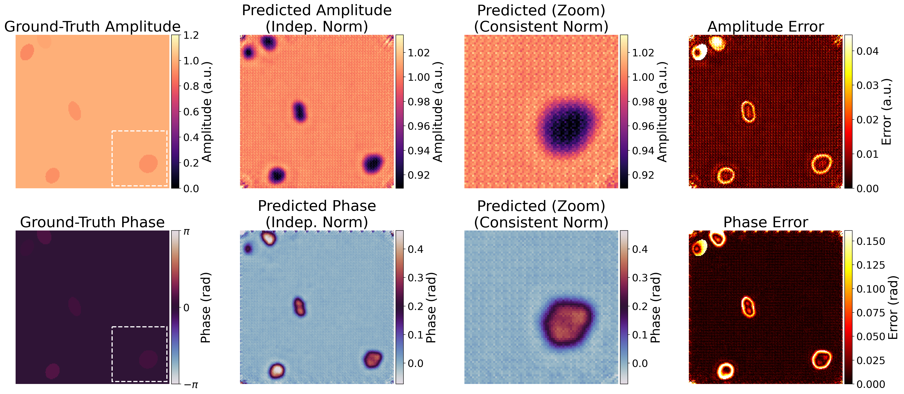
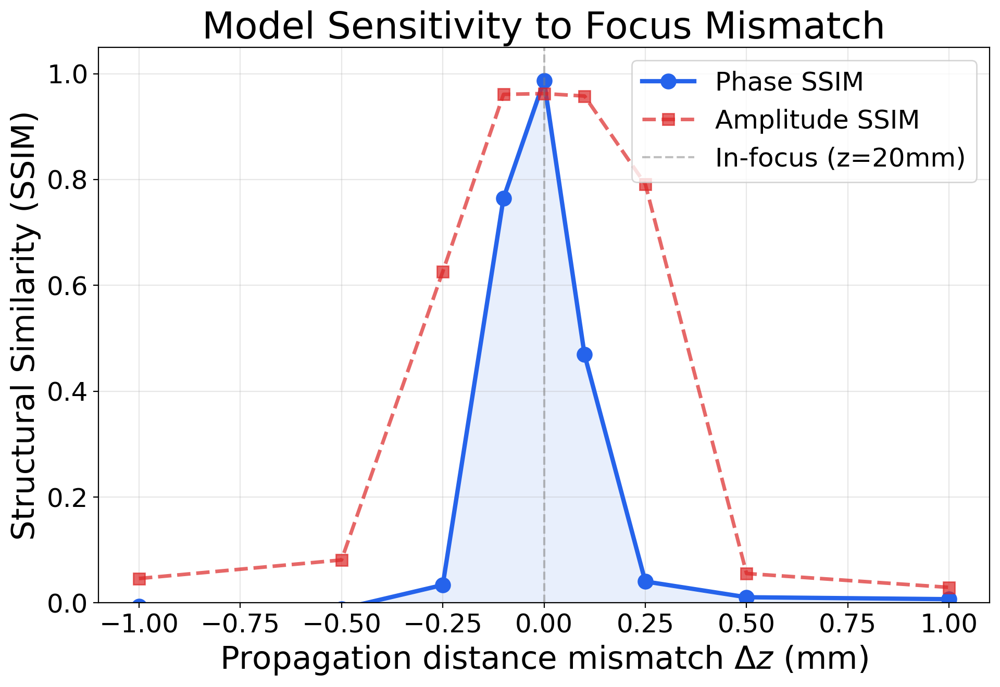

In-line digital holography (DIH) is a widely used lensless imaging technique, valued for its simplicity and capability to image samples at high throughput. However, capturing only intensity of the interference pattern during the recording process gives rise to some unwanted terms such as cross-term and twin-image. The cross-term can be suppressed by adjusting the intensity of the reference wave, but the twin-image problem remains. The twin-image is a spectral artifact that superimposes a defocused conjugate wave onto the reconstructed object, severely degrading image quality.
While deep learning has recently emerged as a powerful tool for phase retrieval, traditional Convolutional Neural Networks (CNNs) are limited by their local receptive fields, making them less effective at capturing the global diffraction patterns inherent in holography. In this study, we introduce HoloPASWIN, a physics-aware deep learning framework based on the Swin Transformer architecture. By leveraging hierarchical shifted-window attention, our model efficiently captures both local details and long-range dependencies essential for accurate holographic reconstruction.
We propose a comprehensive loss function that integrates frequency-domain constraints with physical consistency via a differentiable angular spectrum propagator, ensuring high spectral fidelity. Validated on a large-scale synthetic dataset of 25,000 samples with diverse noise configurations, HoloPASWIN demonstrates effective twin-image suppression and robust reconstruction quality.
HoloPASWIN implements a U-shaped encoder-decoder architecture but replaces standard convolutional layers with Swin Transformer blocks to capture long-range diffraction dependencies.
We constrain the network across spatial, frequency, and physical measurement domains. The total loss combines a supervised L1 loss on amplitude, phase, and the complex field, together with a critical frequency loss ($\mathcal{L}_{freq}$) that prevents the smoothing of high-frequency details.
Additionally, an unsupervised physics loss ($\mathcal{L}_{phy}$) enforces forward imaging consistency. It propagates the predicted object field forward using a differentiable ASM layer and minimizes its distance against the original intensity hologram, mathematically penalizing any physically unnatural twin-image remnants.
Quantitative evaluations underscore the superiority of our framework on a demanding synthetic dataset. HoloPASWIN achieves an exceptional Phase SSIM of 0.974 and a Phase PSNR of 44.3 dB, showcasing robust phase recovery crucial for QPI applications.

Qualitative comparison of reconstruction results. Rows correspond to different test samples. From left to right: Input Hologram, GT Amplitude, Predicted Amplitude, GT Phase, Predicted Phase. The model effectively removes twin-images and background noise while preserving object sharpness.
Detailed Error Analysis. Close-up regions emphasize the model's preservation of fine structural details and the corresponding low magnitudes in the error maps. Differences are mostly confined to high-frequency edges.

Distance Robustness. The model is exceptionally accurate when tested at the training calibration distance (z=20 mm), highlighting the highly geometry-specific nature of deep phase retrieval mappings. Performance degrades with mismatches $\ge 0.5$ mm.

@misc{koçmarlı2026holopaswinrobustinlineholographic,
title={HoloPASWIN: Robust Inline Holographic Reconstruction via Physics-Aware Swin Transformers},
author={Gökhan Koçmarlı and G. Bora Esmer},
year={2026},
eprint={2603.04926},
archivePrefix={arXiv},
primaryClass={eess.IV},
url={https://arxiv.org/abs/2603.04926},
}